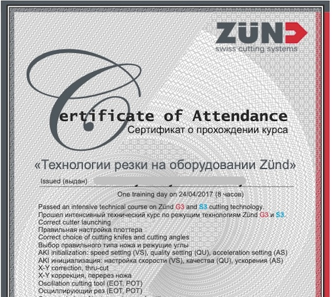
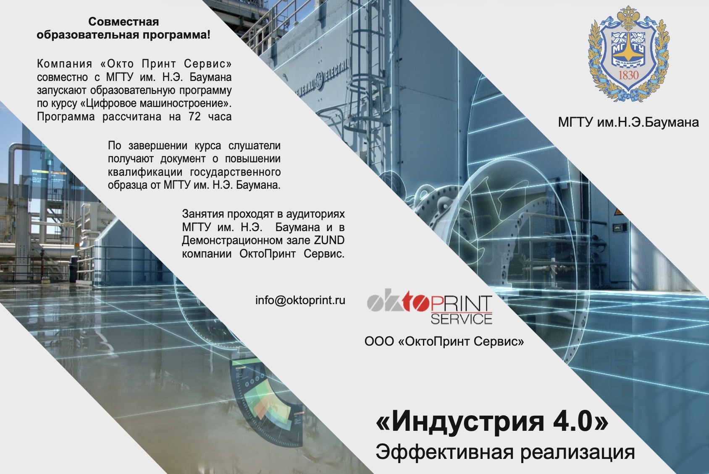
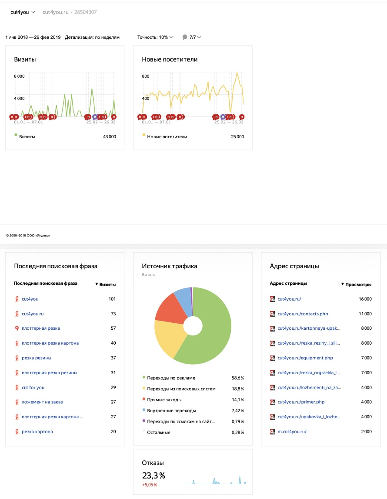
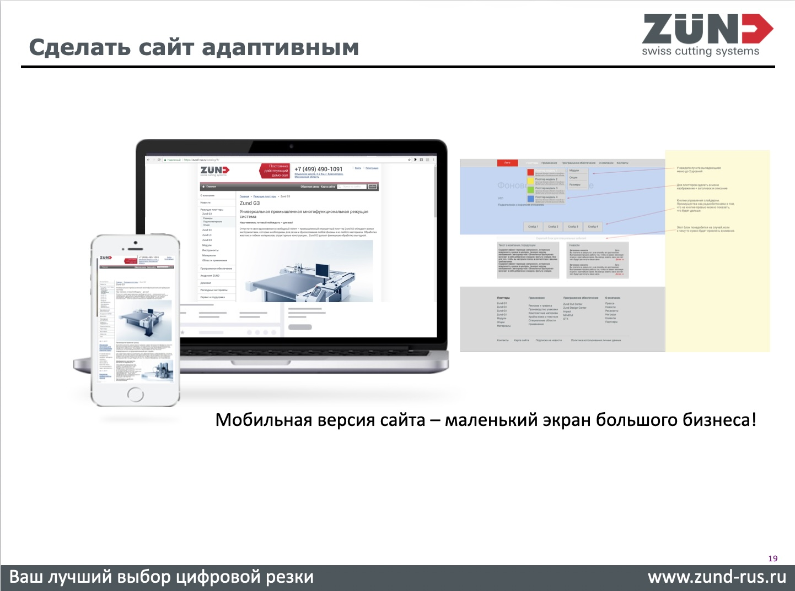
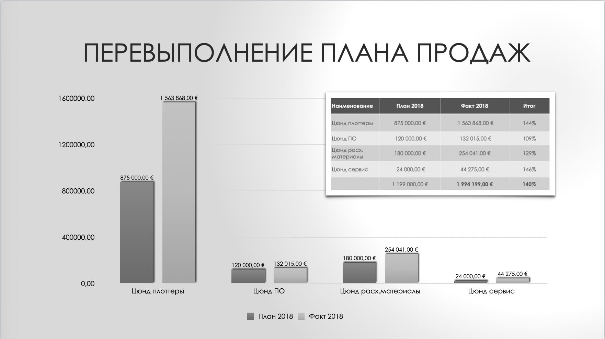
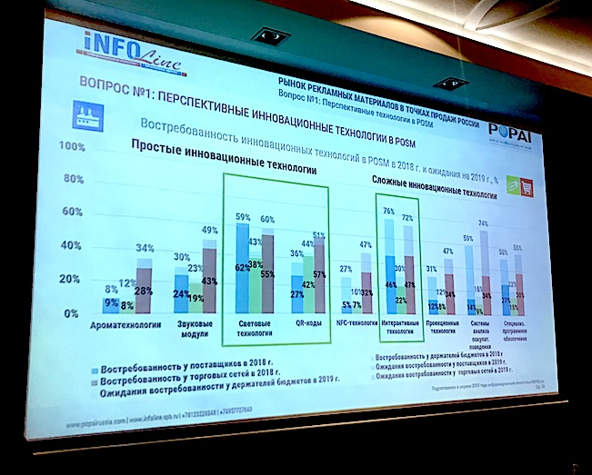
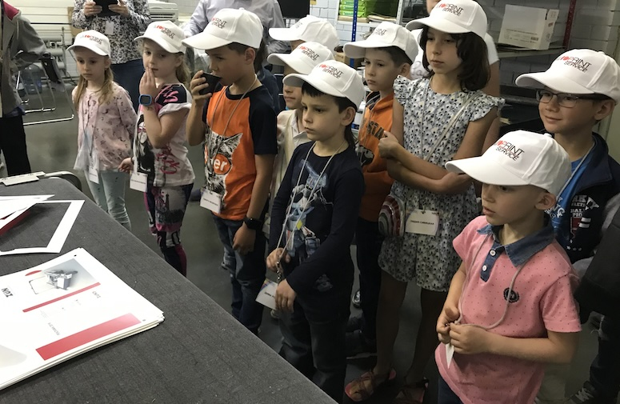
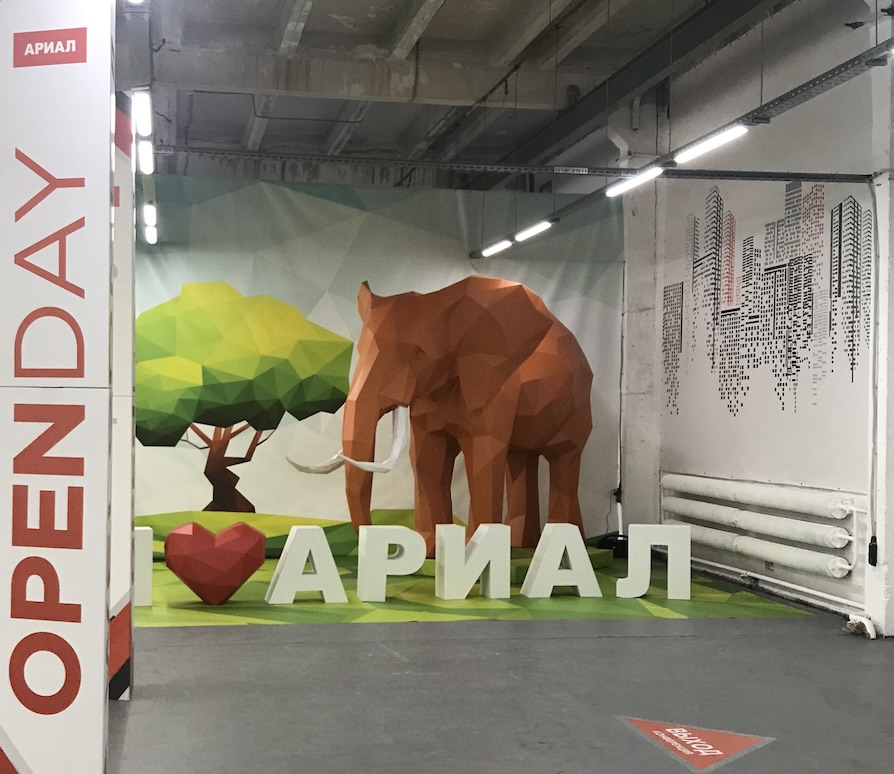

Академия ZUND, Бауманка и cut4you: как маркетинг продаёт оборудование
Трансформация B2B-маркетинга официального представителя Zünd Systemtechnik AG: от разрозненных рекламных активностей к системе привлечения, обучения и развития клиентов.
Комплексная система маркетинга, которая поддерживала продажи промышленного оборудования и развитие новых направлений бизнеса.
Превратить разрозненный маркетинг в инструмент роста продаж
ОКТОПРИНТ Сервис - официальный представитель Zünd Systemtechnik AG. Компания продавала сложное промышленное оборудование - режущие плоттеры Zünd, а маркетинговые активности были разрознены: сайт, выставки и digital работали скорее как отдельные инструменты.
Нужно было выстроить системную работу с рынком: привлекать новых клиентов, объяснять ценность технологий, развивать экспертизу пользователей и создавать дополнительные точки контакта с потенциальными покупателями.
Создать экосистему вокруг оборудования
Вместо продвижения только через рекламу - выстроить путь клиента: от первого знакомства с технологией и обучения до заказа услуги, покупки оборудования и долгосрочного сотрудничества.
Обучение и экспертиза
Академия ZUND и образовательная программа с МГТУ им. Баумана - чтобы развивать компетенции пользователей и укреплять доверие к технологиям.
Новый путь к покупке
Cut4you - сервис резки для компаний, которым пока невыгодно покупать собственный плоттер. Услуга знакомила клиента с технологией и формировала будущий спрос.
Системная коммуникация
Обновление сайта и SEO, клиентские мероприятия, вебинары и PR - чтобы привлекать аудиторию и развивать отношения с действующими клиентами.
От образовательных продуктов до клиентского сообщества








Академия ZUND и Бауманка
Адаптировали швейцарские курсы и запустили платное обучение с сертификацией инженеров по резке и фрезерованию совместно с офисом Zünd в Швейцарии. Компания стала не только поставщиком оборудования, но и центром профессиональной экспертизы.
Следующим шагом стало партнёрство с МГТУ им. Н.Э. Баумана. Отремонтировали аудиторию и создали совместную программу «Цифровое машиностроение» объёмом 72 часа. По итогам обучения слушатели получали удостоверения о повышении квалификации государственного образца от вуза.
Cut4you: услуга как путь к покупке оборудования
Запустили направление cut4you - услуги резки для компаний, которым требовалось оборудование, но покупка собственного плоттера пока была недоступна или экономически нецелесообразна. Стоимость услуги составляла 27 ₽/м².
Клиенты могли отслеживать статистику расходов на резку. На основе этих данных показывали, в какой момент приобретение собственного оборудования в лизинг может оказаться выгоднее. Часть клиентов услуг впоследствии становилась покупателями плоттеров.
Сайт zund-rus.ru и digital-маркетинг
Провели глубокий аудит сайта и выявили проблемы с юзабилити и конверсией. Переработали структуру и тексты, проверяли материалы на «воду» и уникальность, собрали семантическое ядро, подготовили новый сайт и SEO-оптимизацию.
Комьюнити, события и PR
Развивали отношения с клиентами через мероприятия и совместные проекты. Организовали экскурсии на производство: первыми гостями стали дети сотрудников - на них протестировали формат перед запуском для внешней аудитории.
Проводили вебинары совместно с POPAI, организовывали поездки к VIP-клиентам, в том числе в компанию «Ариал», и готовили совместные истории успеха для профильных СМИ. Это позволяло показывать возможности оборудования через реальные результаты компаний-клиентов.
Маркетинг, который повлиял на бизнес-показатели
Новые образовательные и сервисные продукты, системная работа с клиентами и обновлённый digital стали частью общей модели развития продаж оборудования.
Клиентская база
Рост количества клиентов за период работы.
Продажи оборудования
Рост продаж промышленного оборудования Zünd.
План продаж · 2018
Выполнение годового плана продаж на 140%.
Выстроить маркетинг, который работает на бизнес
Я отвечала за развитие маркетинга как комплексного бизнес-инструмента: формировала направления работы, запускала новые проекты и связывала маркетинговые активности с задачами продаж.
В моей зоне ответственности были запуск образовательных продуктов и партнёрств, развитие сервисного направления cut4you, перезапуск сайта и SEO, клиентские мероприятия, PR и работа с ключевыми клиентами.
Моя задача заключалась в том, чтобы объединить эти направления в единую систему взаимодействия с рынком - от первого контакта с брендом до обучения, использования оборудования и дальнейшего развития клиента.